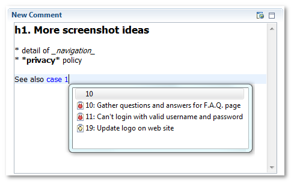

Foglyn User Guide > Editing FogBugz Cases > Case Editor: New Comment


Case Editor: New Comment
New Comment section is used for entering new comments for the case. Unless you have WikiText extension installed, it is very simple. With WikiText and repository configured to use one of Wiki syntaxes for comment formatting, it is very powerful. It not only formats the text as you type it, but also provides auto-complete for known FogBugz cases and wiki formatting syntax.

FogBugz supports automatic references to other cases by using the word “case” followed by number, e.g. “case 123” will refer to case 123. This also works in Foglyn.
Related Topics: